Chapter 7 Data Visualization
7.1 Why Visualization?
Data visualization is very important. I would like to illustrate this point with two interesting examples.
7.1.1 Datasaurus Dozen Dataset
First, let us take a look at an interesting dataset—Datasaurus, which is available in demo_data/data-datasaurus.csv (source: Datasaurus data package. This data set was first created by Alberto Cairo).
| group | x | y |
|---|---|---|
| dino | 95.38460 | 36.794900 |
| dino | 98.20510 | 33.718000 |
| away | 91.63996 | 79.406603 |
| away | 82.11056 | 1.210552 |
| h_lines | 98.28812 | 30.603919 |
| h_lines | 95.24923 | 30.459454 |
| v_lines | 89.50485 | 48.423408 |
| v_lines | 89.50162 | 45.815179 |
| x_shape | 84.84824 | 95.424804 |
| x_shape | 85.44619 | 83.078294 |
| star | 82.54024 | 56.541052 |
| star | 86.43590 | 59.792762 |
| high_lines | 92.24840 | 32.377154 |
| high_lines | 96.08052 | 28.053601 |
| dots | 77.92604 | 50.318660 |
| dots | 77.95444 | 50.475579 |
| circle | 85.66476 | 45.542753 |
| circle | 85.62249 | 45.024166 |
| bullseye | 91.72601 | 52.623353 |
| bullseye | 91.73554 | 48.970211 |
| slant_up | 92.54879 | 42.901908 |
| slant_up | 95.26053 | 46.008830 |
| slant_down | 95.44349 | 36.189702 |
| slant_down | 95.59342 | 33.234129 |
| wide_lines | 77.06711 | 51.486918 |
| wide_lines | 77.91587 | 45.926843 |
This data set includes 1846 rows (items), with three columns describing the properties of the items: group, x and y.
As we have a grouping factor group, we can break the data set into several subsets by group and for each subset we compute their respective mean scores and standard deviations of x and y.
According to the summary statistics of each sub-group (cf. Table 7.2), they all look quite similar in terms of each group’s mean and standard deviation of x and y:
| group | x_mean | y_mean | x_sd | y_sd |
|---|---|---|---|---|
| away | 54.266 | 47.835 | 16.770 | 26.940 |
| bullseye | 54.269 | 47.831 | 16.769 | 26.936 |
| circle | 54.267 | 47.838 | 16.760 | 26.930 |
| dino | 54.263 | 47.832 | 16.765 | 26.935 |
| dots | 54.260 | 47.840 | 16.768 | 26.930 |
| h_lines | 54.261 | 47.830 | 16.766 | 26.940 |
| high_lines | 54.269 | 47.835 | 16.767 | 26.940 |
| slant_down | 54.268 | 47.836 | 16.767 | 26.936 |
| slant_up | 54.266 | 47.831 | 16.769 | 26.939 |
| star | 54.267 | 47.840 | 16.769 | 26.930 |
| v_lines | 54.270 | 47.837 | 16.770 | 26.938 |
| wide_lines | 54.267 | 47.832 | 16.770 | 26.938 |
| x_shape | 54.260 | 47.840 | 16.770 | 26.930 |
So it may be tempting for us to naively conclude that all groups show similar behaviors in x and y measures.
But what if we plot all items according to their x and y values by group ?
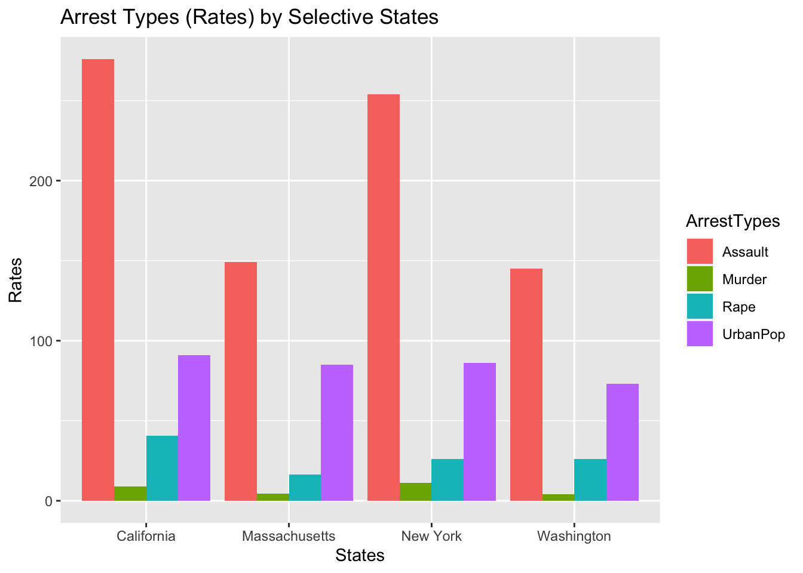
See? When we visualize our data, sometimes the patterns reveal themselves. What you see in numbers may sometimes be very misleading.
7.1.2 Simpson’s Paradox
Another example is Simpson’s Paradox, which refers to a statistical phenomenon where an association between two variables in a population emerges, disappears or reverses when the population is divided into sub-groups.
For example, the following graph shows the association/correlation between x and y for the entire population.
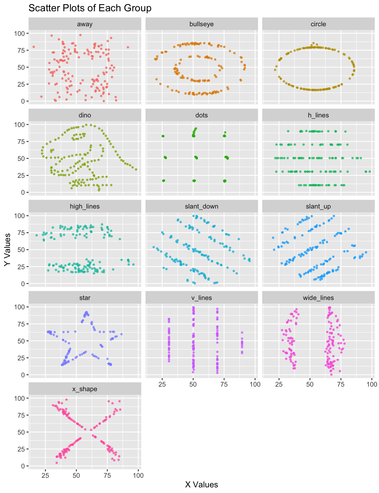
Based on the above graph, you would probably conclude that when x increases, y decreases. That is, the correlation analysis suggests a negative relationship between x and y when the entire population is analyzed as a whole.
However, if we plot the scatter plots by groups (i.e., a Z grouping factor), you may get the opposite conclusions. All correlations between x and y in each sub-group are now positive.
That is, the association you observe in the population now is reversed in each sub-group.
7.2 ggplot2

R is famous for its power in data visualization. In this chapter, I will introduce you a very powerful graphic library in R, ggplot2.
For any data visualization, there are three basic elements:
- Data: The raw material of your visualization, i.e., a data frame.
- Aesthetics: The mapping of your data to aesthetic attributes, such as
x,y,color,size,linetype,fill. - Geometric Objects: The layers of geometric objects you would like to include on the plots, e.g., lines, points, bars, boxplots, etc.

I will demonstrate some basic functions of ggplot2, with the pre-loaded dataset mpg:
library(tidyverse)mpg For data visualization, the first step is to know your dataset, i.e., the meanings of rows and columns. In the dataset mpg, each row refers to a car and the columns include:
model: manufacturer model namedispl: engine displacement, in litres (排氣量)hwy: highway miles per galloncty: city miles per galloncyl: number of cylinders (汽缸數目)class: car typedrv: the type of drive train, where f = front-wheel drive (前輪驅動), r = rear wheel drive (後輪驅動), 4 = 4wd (四輪傳動)
There are two very useful functions for exploration of a data frame: str() and summary().
str(mpg)tibble [234 × 11] (S3: tbl_df/tbl/data.frame)
$ manufacturer: chr [1:234] "audi" "audi" "audi" "audi" ...
$ model : chr [1:234] "a4" "a4" "a4" "a4" ...
$ displ : num [1:234] 1.8 1.8 2 2 2.8 2.8 3.1 1.8 1.8 2 ...
$ year : int [1:234] 1999 1999 2008 2008 1999 1999 2008 1999 1999 2008 ...
$ cyl : int [1:234] 4 4 4 4 6 6 6 4 4 4 ...
$ trans : chr [1:234] "auto(l5)" "manual(m5)" "manual(m6)" "auto(av)" ...
$ drv : chr [1:234] "f" "f" "f" "f" ...
$ cty : int [1:234] 18 21 20 21 16 18 18 18 16 20 ...
$ hwy : int [1:234] 29 29 31 30 26 26 27 26 25 28 ...
$ fl : chr [1:234] "p" "p" "p" "p" ...
$ class : chr [1:234] "compact" "compact" "compact" "compact" ...summary(mpg) manufacturer model displ year
Length:234 Length:234 Min. :1.600 Min. :1999
Class :character Class :character 1st Qu.:2.400 1st Qu.:1999
Mode :character Mode :character Median :3.300 Median :2004
Mean :3.472 Mean :2004
3rd Qu.:4.600 3rd Qu.:2008
Max. :7.000 Max. :2008
cyl trans drv cty
Min. :4.000 Length:234 Length:234 Min. : 9.00
1st Qu.:4.000 Class :character Class :character 1st Qu.:14.00
Median :6.000 Mode :character Mode :character Median :17.00
Mean :5.889 Mean :16.86
3rd Qu.:8.000 3rd Qu.:19.00
Max. :8.000 Max. :35.00
hwy fl class
Min. :12.00 Length:234 Length:234
1st Qu.:18.00 Class :character Class :character
Median :24.00 Mode :character Mode :character
Mean :23.44
3rd Qu.:27.00
Max. :44.00 To begin with, I like to use one simple example to show you how we can create a plot using ggplot2.
With the dataset mpg, we can look at the relationship between displ and hwy: whether the engine displacement has to do with the car miles per gallon. We can draw a scatter plot as shown below.
ggplot(data = mpg, aes(x = displ, y = hwy)) +
geom_point()

A ggplot object often includes lat least three important components:
ggplot()initializes the basic frame of the graph, withdata = mpgspecifying the data frame on which the plot is builtaes()further specifies the mapping of axises and the factors in the data frame.aes(x = displ, y = hwy)indicates thatdisplis mapped as thexaxis andhwyasyaxis+means that you want to add one layer of the graph to the template.geom_point()means that you want to add a layer of point graph.
7.3 Variables and Data Type
When creating the graphs for your data, you need to know very well the data type of all the variables to be included in the graph. There are at least three important data types you need to know:
- Categorical variables: these variables usually have only limited set of discrete values, i.e., levels. They are usually coded as
charactervector orfactorin R. - Numeric variables: these variables are continuous numeric values. They are usually coded as
numericvector. - Date-Time variables: these variables, although being numeric sometimes, refer to calendar dates or times. They are usually coded as
Date-TimeClassesin R.
The general principle in data visualization is that always pay attention to the data type for variables on the x-axis and y-axis.
7.4 One-variable Graph
If your graph includes only one variable from the data, usually this would indicate that you are interested in the distribution of the variable.
7.4.1 Continuous Variable
- Histogram
- Density plot
ggplot(data = mpg, aes(hwy)) +
geom_histogram(color='white')
ggplot(data = mpg, aes(hwy)) +
geom_density(kernel="gaussian")
We can also combine the histogram and density plots into one:

Any thoughts about how to do that?
The way we examine the distribution of the continuous variable (i.e., numbers) is to divide the entire range of values into a series of intervals, i.e., bins, and then count how many values in the data set fall into each interval.
In other words, the shape of your histogram may vary depending on two parameters:
- Number of bins: the number of intervals you have
- Bin width: the size of each interval
Changes of either of the parameters would lead to a histogram of a different shape.
ggplot(data = mpg, aes(hwy)) +
geom_histogram(
color = 'white',
fill = 'steelblue',
alpha = 0.7,
bins = 10
) +
scale_x_continuous(breaks = seq(10, 46, 1))ggplot(data = mpg, aes(hwy)) +
geom_histogram(
color = 'white',
fill = 'steelblue',
alpha = 0.7,
binwidth = 2
) +
scale_x_continuous(breaks = seq(10, 46, 1))
## You can check the min or max of each bin
g <- ggplot(data = mpg, aes(hwy)) +
geom_histogram(color = "white")
## Auto-print the ggplot
g
## Checking bin interval min and max
ggplot_build(g)$data[[1]]$xmin [1] 11.58621 12.68966 13.79310 14.89655 16.00000 17.10345 18.20690 19.31034
[9] 20.41379 21.51724 22.62069 23.72414 24.82759 25.93103 27.03448 28.13793
[17] 29.24138 30.34483 31.44828 32.55172 33.65517 34.75862 35.86207 36.96552
[25] 38.06897 39.17241 40.27586 41.37931 42.48276 43.58621ggplot_build(g)$data[[1]]$xmax [1] 12.68966 13.79310 14.89655 16.00000 17.10345 18.20690 19.31034 20.41379
[9] 21.51724 22.62069 23.72414 24.82759 25.93103 27.03448 28.13793 29.24138
[17] 30.34483 31.44828 32.55172 33.65517 34.75862 35.86207 36.96552 38.06897
[25] 39.17241 40.27586 41.37931 42.48276 43.58621 44.689667.4.2 Categorical Variable
- Bar plot
ggplot(data = mpg, aes(x = class)) +
geom_bar()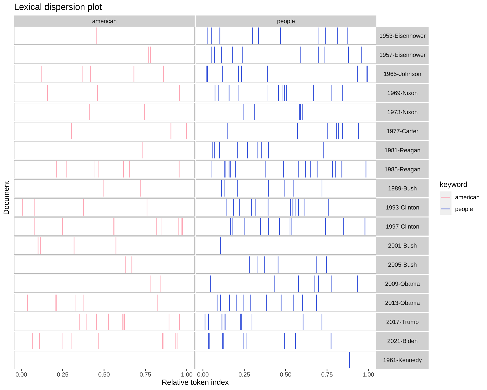
When creating the bar plot, we can also use the normalized frequencies of each category, instead of the raw frequency counts. Any idea?
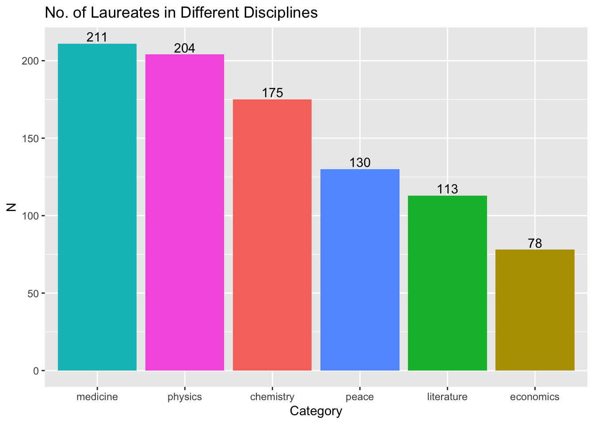
Exercise 7.1 How can we create a bar plot as above but with the bars arranged according to the counts in a descending order from left to right? (see below)
Hint: checkreorder()
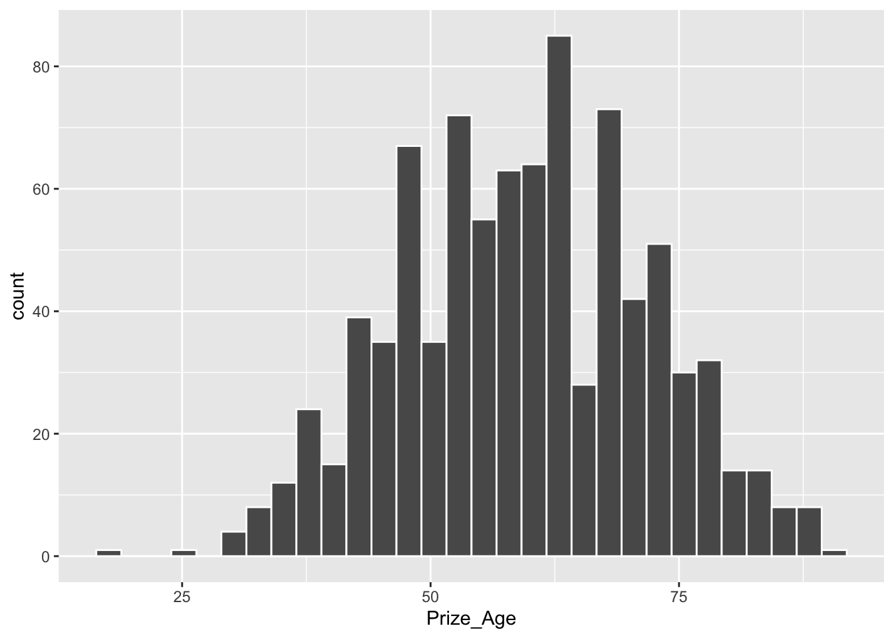
7.5 Two-variable Graph
If your graph includes two variables, then very likely one variable would go to the x-axis and the other, y-axis. Depending on their data types (categorical or numeric), you may need to create different types of graphs.
7.5.1 Continuous X, Continuous Y
- Scatter Plot
ggplot(data = mpg, aes(x = displ, y = hwy)) +
geom_point()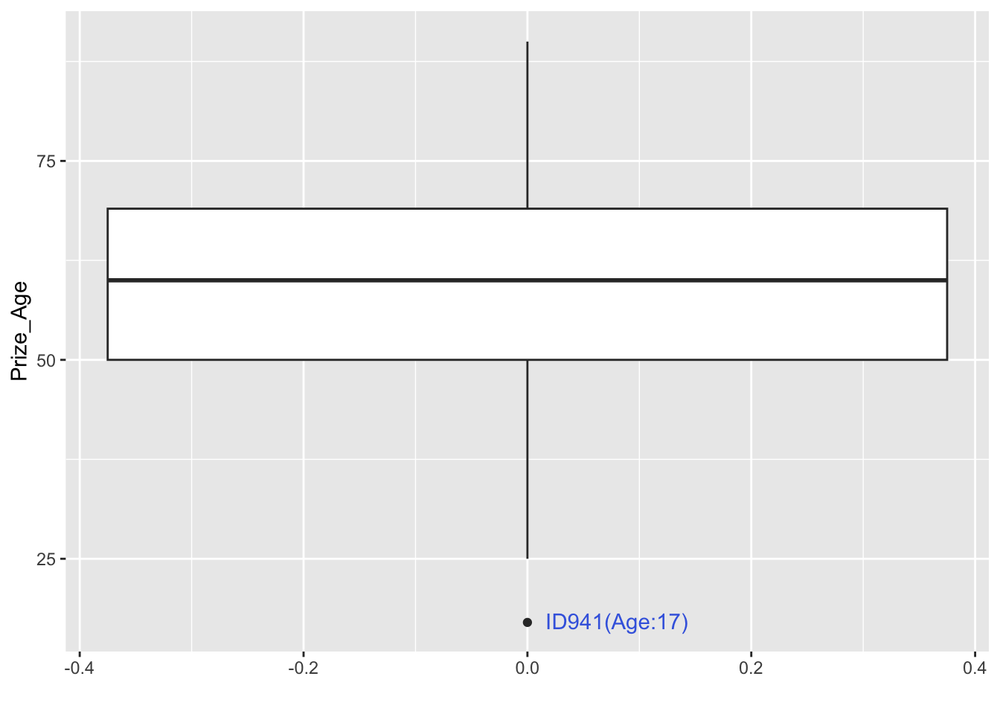
We can add a regression line to the scatter plot:
ggplot(data = mpg, aes(x = displ, y = hwy)) +
geom_point() +
geom_smooth(method='lm', formula= y~x)
7.5.2 Categorical X, Continuous Y
- Boxplot
ggplot(data = mpg, aes(x = class, y = hwy)) +
geom_boxplot()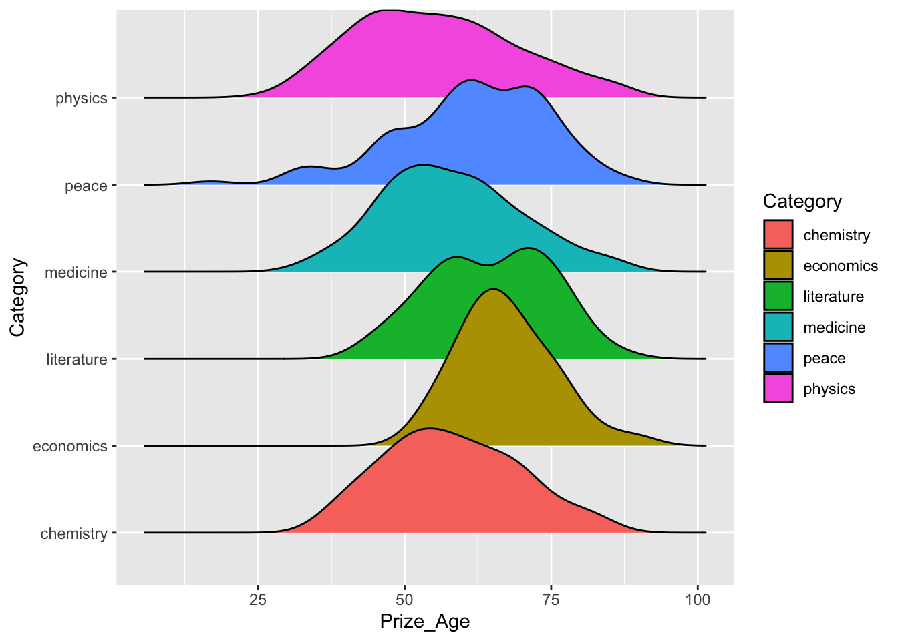
If you would like to know more about boxplots, please check this blog post. The following illustration is taken from the blog post, which shows the meanings of different boxplot parts.

- Error Plot
ggplot(data = mpg, aes(x = class, y = hwy)) +
stat_summary(fun.data = mean_cl_boot, geom = "pointrange")
The functions, mean_cl_normal() and mean_cl_boot() are two wrappers around functions from Hmisc library. The mean_cl_normal() computes the mean and the confidence limits based on a t-distribution. As an alternative, mean_cl_boot would produce a less assumption laden bootstrapped confidence interval.
ggplot(data = mpg, aes(x = class, y = hwy)) +
stat_summary(fun.data = mean_cl_normal, geom = "pointrange")
If you run into problems plotting the error plot using stat_summary(), probably you did not have the necessary packages installed in your current R environment. Please make sure that you have installed the package tidyverse or ggplot2 properly without any error messages in the process of installation.
Also, please note that you need to install the tidyverse from source. (For the other relevant packages, it is ok to install those packages in a normal way from CRAN). For more detail, please refer back to Chapter 2.9.
7.5.3 Categorical X, Categorical Y
- Bubble Plot
- Heatmap
ggplot(data = mpg, aes(x = manufacturer, y = class)) +
geom_count() +
theme(axis.text.x = element_text(angle=-90))We can also create a heatmap for two categorical variables:
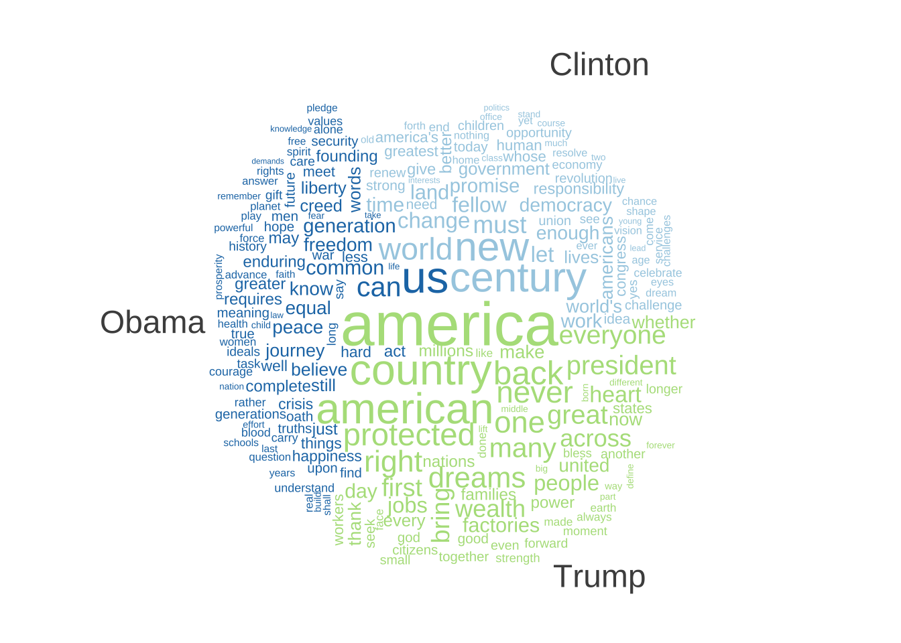
Exercise 7.2 Please create a heat map as shown above. In order to create a heat map, you may also need the frequency counts of each level combination.
Also, please include these frequency counts in the heat map as well.
Hint: geom_tile(); geom_text()
7.6 Adding More Aesthetic Features or Layers
7.6.1 color
Now I would like to demonstrate how we can add additional aesthetic mappings to your graphs.
Earlier we create a scatter plot using the following code:
ggplot(data = mpg, aes(x = displ, y = hwy)) +
geom_point()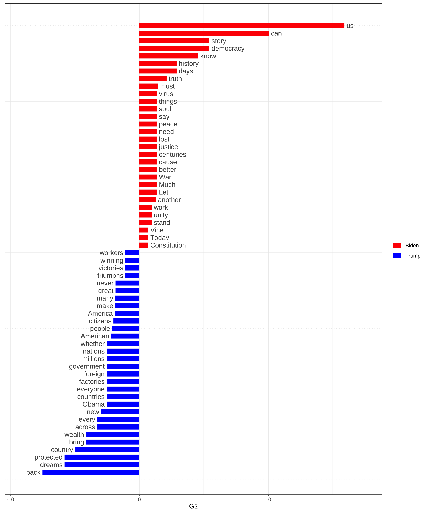
The above plot includes two variables into the graph, x = displ and y = hwy.
The additional aesthetic features may include things like colors, sizes, shapes, line-types, widths etc. The idea is that we can introduce a third variable into the plot by modifying these aesthetic attributes based on the value of that third variable.
- For example, you can add
color = ...in theaes(x = ..., y = ..., color = ...)to create the graphs on the basis of another grouping factor.
ggplot(data = mpg, aes(x = displ, y = hwy, color = drv)) +
geom_point()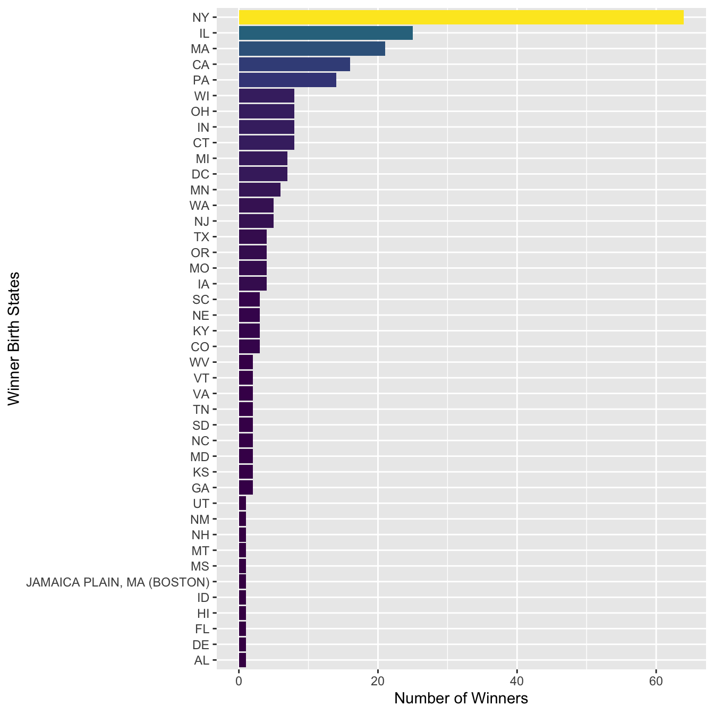
In the above example, color is an aesthetics (put in the aes()).
This would suggest that the color of each point is now mapped to the variable drv. In this case, points belonging to different groups of drv would be of different colors—different drive train types have different colors in points.
Note that the x-coordinates and y-coordinates are aesthetics too, and they are mapped to the displ and hwy variables, respectively. Now we enrich the graph by further mapping the color to the third variable drv, which indicates whether a car is front wheel drive, rear wheel drive, or 4-wheel drive.
If you would like to know more about the color names available in R, I would highly recommend this R Color Cheat Sheet.
Exercise 7.3 When creating a graph, the aesthetic feature color can also be specified within the geom_*() as well.
Please compare the following two ways of color specification and describe their respective functional differences.
## Method 1
ggplot(data = mpg, aes(x = displ, y = hwy, color = drv)) +
geom_point()
## Method 2
ggplot(data = mpg, aes(x = displ, y = hwy)) +
geom_point(color = "steelblue")
7.6.2 alpha
Transparency (alpha) can sometimes be helpful in data visualization.
ggplot(data = mpg, aes(x = displ, y = hwy, color = drv)) +
geom_point(alpha = .5, size = 4)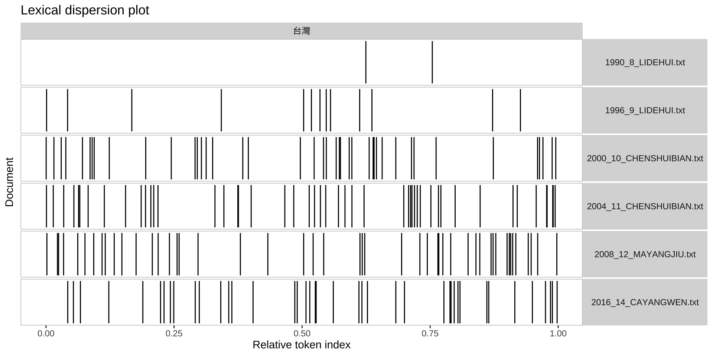
7.6.3 size
We can also map a grouping factor to the aesthetic feature size. That is, different groups will be represented by geometric objects of varying sizes.
ggplot(data = mpg, aes(x = displ, y = hwy, size = drv, color= drv)) +
geom_point(alpha = .5)
7.6.4 fill
For bar plots or histograms, we can fill the bars with different colors by adding fill = ... in the aes().
ggplot(data = mpg, aes(x = class, fill= class)) +
geom_bar(color='white')
ggplot(data = mpg, aes(x = class, y = hwy, fill = class)) +
geom_boxplot(color='black')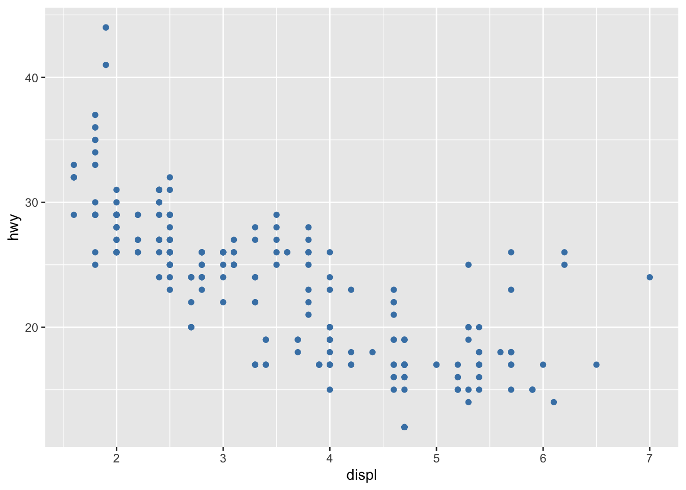
7.6.5 shape
We can map a third variable to the graph using shape as well.
ggplot(data = mpg, aes(x = displ, y = hwy, shape = drv)) +
geom_point()And of course you can map both shape and color to the same third variable:
ggplot(data = mpg, aes(x = displ, y = hwy, color = drv, shape=drv)) +
geom_point()
Exercise 7.4 In Section 7.5, we talked about how to create a bubble plot.
ggplot(data = mpg, aes(x = manufacturer, y = class)) +
geom_count() +
theme(axis.text.x = element_text(angle=-90))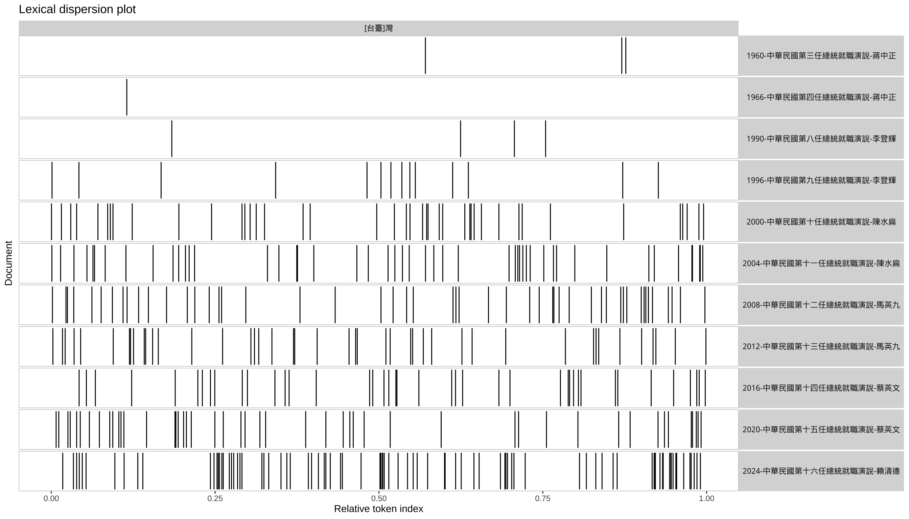
Please adjust the codes to create a similar bubble plot with not only the sizes but also the colors of the bubbles indicating the varying token numbers in each level combination.

7.6.6 Other geom_... Layers
The ggplot object consists of layers of geometric objects. We can also add another geom_*() object, such as a smooth line by using the +:
ggplot(data = mpg, aes(x = displ, y = hwy)) +
geom_point() +
geom_smooth(method = "lm")Could you predict what kind of graph you would get with the following code?
ggplot(data = mpg, aes(x = displ, y = hwy, color = drv)) +
geom_point() +
geom_smooth(method="lm")7.6.7 Labels and Annotations
We can add self-defined labels of the x and y axes and main titles to the graphs using labs().
ggplot(data = mpg, aes(x = displ, y = hwy)) +
geom_point() +
geom_smooth(method='lm') +
labs(title = "Correlation between Displacement and Highway Miles per Gallon",
x = "Displacement", y = "Miles/Per Gallon")ggplot(data = mpg, aes(x = displ, y = hwy, color = drv)) +
geom_point() +
labs(x = "Engine Displacement (litres)",
y = "Highway Miles per Gallon",
title = "Scatter Plot -- DISPL by HWY")7.6.8 Facets
Sometimes we may want to create plots based on a conditional factor. For example, we can check the relationship between cty and hwy for cars by different manufacturers.
ggplot(data = mpg, aes(x = cty, y = hwy)) +
geom_point() +
geom_smooth(method = "lm") +
facet_wrap(vars(class))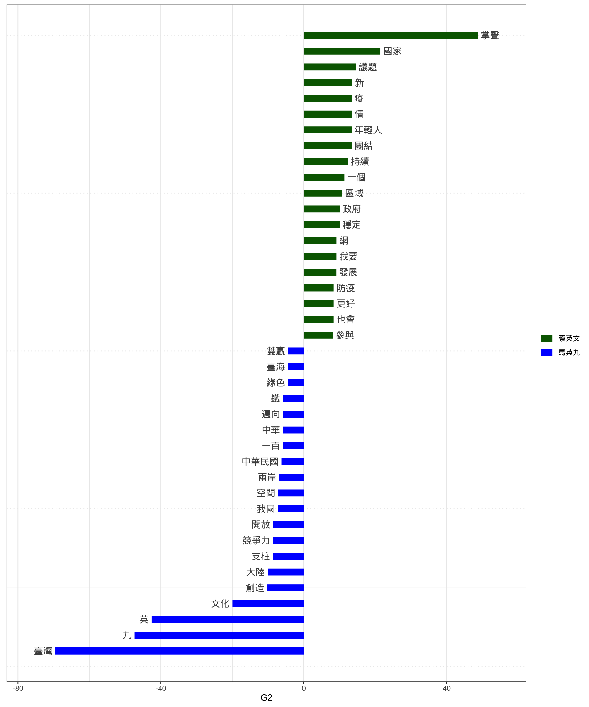
Please check facet_grid() on your own.
7.6.9 Themes
We can easily change the aesthetic themes of the graph by adding one layer of theme_*().
graph1 <- ggplot(data = mpg, aes(x = displ, y = hwy, color = drv)) +
geom_point() +
labs(x = "Engine Displacement (litres)",
y = "Highway Miles per Gallon",
title = "Scatter Plot -- DISPL by HWY")
graph1
graph1 + theme_bw(base_family = "Times New Roman")
graph1 + theme_minimal()
graph1 + theme_dark()
graph1 + theme_classic()
graph1 + theme_light()
7.7 Saving Plots
Saving a ggplot can be easily done by ggsave(). You can first assign a ggplot object to a variable and then use ggsave() to output the ggplot object to an external file.
It is recommended to use common image formats for publications, e.g., png, jpg.
Also, please remember to set the width and height (in inches) of your graph. These settings will greatly affect the look of the graph in print.
my_first_graph <-
ggplot(data = mpg, aes(x = displ, y = hwy, color = drv)) +
geom_point() +
labs(x = "Engine Displacement (litres)", y = "Highway Miles per Gallon",
title = "Scatter Plot -- DISPL by HWY")
class(my_first_graph) # check the class[1] "gg" "ggplot"# summary(my_first_graph) # check the properties of the graph
my_first_graph # auto-print the ggplotggsave(
filename = "my_first_plot.png",
plot = my_first_graph,
width = 6,
height = 6
)7.8 Exercises on iris
The following exercises will use the preloaded dataset iris in R.
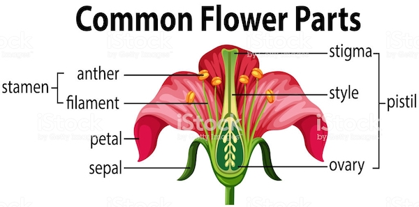
irisSepal.Length and Petal.Length for different iris Species. Also, please add the regression lines for each species. Your graph should look as close to the sample as possible.

Petal.Width distributions of each iris Species.
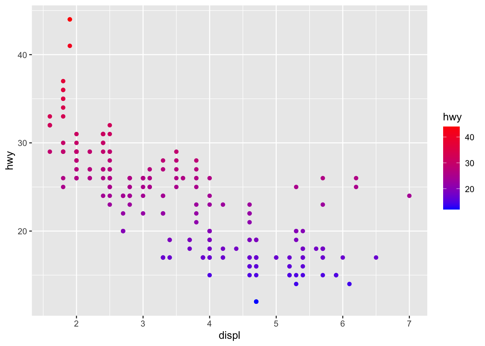
Exercise 7.7 Please create boxplots showing the distributions of Petal.Width and Sepal.Width of different iris Species on the same graph.
tidyr::pivot_longer(). Please work on this exercise when we finish Chapter 8.
7.9 Exercises on COVID-19
Please work on the exercises included this section after we finish the Chapter 8. (In other words, I may ask you to submit your assignments on these two chapters together.)
The following exercises are based on a dataset downloaded from Kaggle. The dataset is also available in demo_data/data-covid19.csv.
Exercise 7.8 Load the dataset in demo_data/data-covid19.csv into R as a data frame named covid19.
readr::read_csv()
Please note that in this dataset, the column Confirmed includes the cumulative numbers of confirmed cases on different days. These cumulative numbers allow us to keep track of the development of COVID-19. It is the same for the other columns as well (i.e., Deaths and Recovered).
Also, for countries like Mainland China, the numbers are reported by Province/State. (Same for US as well).
To get the total number of confirmed cases on a particular day for the entire country, you may need to sum up all the numbers in individual provinces first.
ggplot2 to create a line plot showing the number of confirmed cases by month for the following countries: Taiwan, Japan, US, UK, Germany, Netherlands, Mainland China. A sample graph is shown below.


Exercise 7.12 (bonus) Create a world map showing the current outbreak of covid19.
Hint: Please checkggplot2::geom_polygon() and the package library(maps). This exercise is made to see if you know how to find resources online for more complex tasks like this. Please note that the country names may not match.